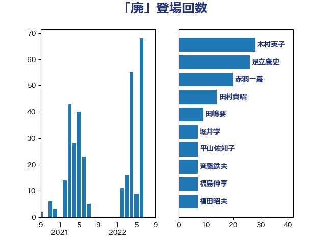

単語「廃」

| 木村英子 | れいわ新選組 | 28 回 |
| 足立康史 | 日本維新の会 | 26 回 |
| 赤羽一嘉 | 公明党 | 20 回 |
| 田村貴昭 | 日本共産党 | 14 回 |
| 田嶋要 | 立憲民主党 | 9 回 |
| 堀井学 | 自由民主党 | 7 回 |
| 平山佐知子 | 無所属 | 7 回 |
| 斉藤鉄夫 | 公明党 | 7 回 |
| 福島伸享 | 無所属 | 7 回 |
| 福田昭夫 | 立憲民主党 | 7 回 |
| 穂坂泰 | 自由民主党 | 7 回 |
| 竹谷とし子 | 公明党 | 6 回 |
| 秋野公造 | 公明党 | 5 回 |
| 竹内真二 | 公明党 | 5 回 |
| 萩生田光一 | 自由民主党 | 4 回 |
| 重徳和彦 | 立憲民主党 | 4 回 |
| 高橋千鶴子 | 日本共産党 | 4 回 |
| 徳永エリ | 立憲民主党 | 3 回 |
| 笹川博義 | 自由民主党 | 3 回 |
| 高木毅 | 自由民主党 | 3 回 |
| 城井崇 | 立憲民主党 | 2 回 |
| 山岡達丸 | 立憲民主党 | 2 回 |
| 山崎正恭 | 公明党 | 2 回 |
| 岩田和親 | 自由民主党 | 2 回 |
| 武部新 | 自由民主党 | 2 回 |
| 赤嶺政賢 | 日本共産党 | 2 回 |
| 近藤和也 | 立憲民主党 | 2 回 |
| 道下大樹 | 立憲民主党 | 2 回 |
| 高見康裕 | 自由民主党 | 2 回 |
| 鷲尾英一郎 | 自由民主党 | 2 回 |
| たがや亮 | れいわ新選組 | 1 回 |
| 三木亨 | 自由民主党 | 1 回 |
| 三浦信祐 | 公明党 | 1 回 |
| 上田英俊 | 自由民主党 | 1 回 |
| 下野六太 | 公明党 | 1 回 |
| 務台俊介 | 自由民主党 | 1 回 |
| 古川禎久 | 自由民主党 | 1 回 |
| 古賀友一郎 | 自由民主党 | 1 回 |
| 吉良よし子 | 日本共産党 | 1 回 |
| 堤かなめ | 立憲民主党 | 1 回 |
| 宮崎雅夫 | 自由民主党 | 1 回 |
| 小島敏文 | 自由民主党 | 1 回 |
| 小泉進次郎 | 自由民主党 | 1 回 |
| 小野泰輔 | 日本維新の会 | 1 回 |
| 山口壯 | 自由民主党 | 1 回 |
| 山崎誠 | 立憲民主党 | 1 回 |
| 山添拓 | 日本共産党 | 1 回 |
| 岩本剛人 | 自由民主党 | 1 回 |
| 川合孝典 | 国民民主党 | 1 回 |
| 後藤祐一 | 立憲民主党 | 1 回 |
| 朝日健太郎 | 自由民主党 | 1 回 |
| 梅村みずほ | 日本維新の会 | 1 回 |
| 武井俊輔 | 自由民主党 | 1 回 |
| 源馬謙太郎 | 立憲民主党 | 1 回 |
| 田名部匡代 | 立憲民主党 | 1 回 |
| 石井準一 | 自由民主党 | 1 回 |
| 石川香織 | 立憲民主党 | 1 回 |
| 篠原孝 | 立憲民主党 | 1 回 |
| 菅義偉 | 自由民主党 | 1 回 |
| 西田昭二 | 自由民主党 | 1 回 |
| 谷川とむ | 自由民主党 | 1 回 |
| 金子恵美 | 立憲民主党 | 1 回 |
| 鈴木俊一 | 自由民主党 | 1 回 |
| 鈴木義弘 | 国民民主党 | 1 回 |
| 須藤元気 | 無所属 | 1 回 |